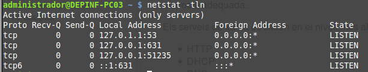

Cuando hablamos de servicios de red nos referimos a aquellas aplicaciones que se ejecutan en segundo plano (background), normalmente sin interacción por parte del usuario, y que están continuamente esperando (listening) la petición por parte de un cliente. Una vez reciban una petición encargan de gestionar la respuesta adecuada.
La orden netstat con los parámetros -tln nos muestra los servicios que actualmente están escuchando peticiones para TCP.
Servicios esperando peticiones para TCP

Servicios esperando peticiones para TCP
Los servicios de red es sitúan en el nivel más alto de la estructura de capas, el de aplicación. Algunas de los servicios más significativos son:
- HTTP
- DHCP
- DNS
- FTP
- SMTP
- SSH
- POP
- IMAP